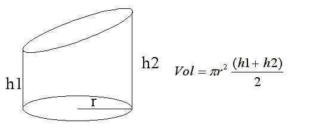

Descripción:
Descripción:
- Desarrollarán la solución de
algunos problemas.
 Objetivo:
Objetivo:
- Escribir programas simples en
Python que impliquen el uso de operadores básicos.
 Modalidad y forma de trabajo: Modalidad y forma de trabajo:
Diseño colaborativo, implementación
individual.
- Intégrate con tu equipo colaborativo y sigue las indicaciones
del profesor.
- Junto con tus compañeros de equipo, analiza cada uno de
los ejercicios que se presentan a continuación.
- Identifiquen, en
equipo, cual sería el algoritmo para la solución de cada uno
de los ejercicios. Recuerden documentarlos en sus hojas membretadas.
- De manera individual escribe un programa en
Python para cada uno de
los ejercicios. Recuerda basarte en el algoritmo que se generó en
el equipo.
- Una vez que hayas terminado tus programas,
apoya a tus compañeros de equipo con las dudas que tengan (no hagas el
laboratorio por ellos ya que esto sólo los perjudica).
- Entrega por Canvas, los archivos *.py que
contengan los programas en Python.
Instrucciones:
Operaciones con variables "Enteras"
Escribe un programa completo en Python, que convierta un tiempo expresado
en segundos al formato de horas, minutos y
segundos. Considera que el valor del tiempo en
segundos es proporcionado por el usuario.
Por ejemplo para un tiempo de
8243 segundos se desplegará lo siguiente:
Horas : 2
Minutos :
17
Segundos : 23
Solicite un
tiempo en segundos
y calcule la cantidad de horas, minutos y segundos. Despliegue los resultados
en pantalla.
Variables utizadas : tiempo, horas, minutos, segundos y residuo.
Operaciones con variables "Reales o con punto decimal"
Escribe un programa completo en Python que calcule el volúmen
(V) de un cilíndro recto de sección oblicua. Los valores
dados por el usuario son el radio (r) y las alturas (h1 y
h2) del cilíndro. El resultado obtenido (volumen)
debe ser desplegado en la pantalla.

Para el valor de PI
utiliza la constante matemática
math.pi. Para utilizar esta constante agrega la libreria math al
inicio de tu programa (import math)
Guardar esta sección con el nombre:
A2_Matricula.py

Recursos:
Jerarquía de Operadores: Aritméticos,
relacionales y lógicos:
4.
JerarquiaOperadores

Forma de
entrega:
Algoritmos colaborativos:
Se colocan en sus fólders colaborativos.
Programas individuales:
- Envía tus archivos por
Canvas, no se aceptarán
laboratorios por ningún otro medio.
-
Envía solo tus archivos *.py.
-
Los archivos enviados posteriormente a la fecha límite
no serán calificados.
.
Instrucciones para enviar tu laboratorio por Canvas
- Haz clic en el
botón de Tareas.
- Haz clic en la actividad
de EntregaLabCalculos.
- Haz clic en el botón de
Entregar tarea.
- En el fólder de
Carga del archivo, haz clic en el botón de
Examinar y localiza el archivo *.py. Si necesitas agregar
más archivos, haz clic en + Agregue otro archivo,
haz clic en el botón de Examinar y localiza el
otro archivo *.py.
- Cuando hayas terminado
de subir tus archivos, haz clic en el botón de Entregar
tarea y listo!!!
|